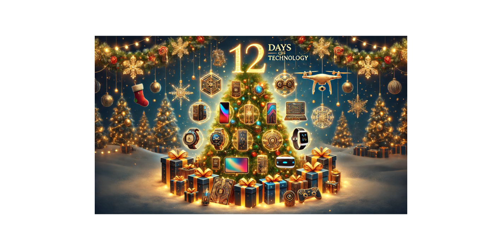

The 12 Days of Tech

The 12 Days of Tech: Gadgets, Gizmos, and Geeky Gifts You Didn’t Know You Needed!
Technology is the gift that keeps on giving—right up until the Wi-Fi goes out. – Unknown
I thought it’d be fun to kick off the holidays with a tech twist—so here’s my take on “The 12 Days of Tech”!
On the first day of Christmas, my true love gave to me:
🎄 A ChatGPT subscription! 🤖
- Because even Santa needs AI to debug his code and write better emails to the elves! 🎅💻
- Perfect for fixing my writing skils (see what I did there?) and generating awesome code faster than Rudolph on a caffeine rush. 🚀
On the second day of Christmas, my true love gave to me:
🎄 An Elgato Stream Deck! 🚀
- Because pressing buttons is way more fun when it feels like you’re launching a rocket, not just opening Zoom! 🚀
- Automation – Turn tedious tasks into one-tap magic. ✨
- Demos – Nail presentations like a pro. 🎤
- Launch apps – Open anything faster than Santa sliding down a chimney. 🎅💻
- Commands – Control everything with a single push—because who needs extra clicks? 🔘
On the third day of Christmas, my true love gave to me:
🎄 An epic Home Lab setup! 💻 ✨
- Because who doesn’t dream of turning their spare room into a mini data center? 🏢
- Several MS-01 servers – Because one is never enough. 🖥️
- A cool small rack – Because racks deserve compliments too. 😎
- Thin network cables – So I can finally stop wrestling with spaghetti wiring. 🍝 🔌
- Fusion/Workstation – For when I need to virtualize my virtualizations! 🧊 💻
It’s basically Santa’s workshop... but with more blinking LEDs and fewer elves. 🎄 💡 🎅
On the fourth day of Christmas, my true love gave to me:
🎄 A box full of fancy input devices! 🎁 ⌨️ 🖱️
- Because typing, clicking, and Zooming deserve premium gear! 💻 🎤 📸
- Keychron K10 Pro Wireless Mechanical Keyboard – For that clickety-clack sound that makes you feel 10x more productive. ⌨️ ✨
- Keychron M3 Wireless Mouse – Fits my hand so perfectly, it’s basically ergonomic destiny. 🖱️ 👌
- Logitech MX Brio 4K Webcam – Because if I’m going to freeze on Zoom, I’ll do it in ultra-HD. 📸 💎
- Shure MV51 Microphone – For sounding like a podcast host, even when I’m just yelling at my computer. 🎤 🎙️
Now I’m ready to code, stream, and crush meetings—all while looking and sounding like a tech rockstar. 🤘 🎤 🖱️
On the fifth day of Christmas, my true love gave to me:
🎄 An X Premium Subscription! 📱 ✨
- Curated lists so I only see the stuff that actually matters—no more doomscrolling rabbit holes. 🐇 📜
- Premium perks, like no ads—finally, peace and quiet on my feed. 😎 🔇
It’s like social media, but with fewer distractions and more time to pretend I’m productive. 🎄 📱 💼
--
On the sixth day of Christmas, my true love gave to me:
🎄 A stocking full of cool apps for my Apple MacBook—because productivity is just an app download away! 🎁 🍎
- CleanshotX – For screenshots so clean, they make my desktop look organized (even if it’s not). 📸
- GitHub, Desktop, and Pages – Because version control is my love language. 💻❤️
- Bitly – Short links for long-winded tech posts. 🔗
- VSCode – Coding like a pro, one extension at a time. 👨💻
- PowerShell – Cross-platform scripts that feel like Christmas magic. 🎅
- Hugo – Static sites so fast, they practically build themselves. 🚀
- Python – For when I need to automate all the things. 🐍
- Notion – Organizing my chaos... or at least trying to. 📚
- Obsidian – Notes so connected, they’re practically a mind map. 🧠
- Affinity Photo & Publisher – Designs sharp enough to impress Santa’s elves. 🎨
- Termius – SSH access smoother than eggnog. 🖥️
- Audio Hijack – Recording audio like I’m hosting a holiday podcast. 🎤
- Ollama – AI experiments that make me feel like Tony Stark. 🤖
- Twingate – Secure access for when I’m working remotely from anywhere. 🌍
- Keyboard Maestro – Automating shortcuts faster than Santa’s sleigh. ⌨️✨
- Backblaze – Backups so reliable, even the Grinch couldn’t steal my data. 🔒
Who needs partridges and pear trees when you’ve got apps like these? 🎄 💻
On the seventh day of Christmas, my true love gave to me:
🎄 Some super cool Apple devices! 🍎 ✨
- iPad Pro – For when I need a tablet that’s basically a laptop in disguise. 📱 💼
- MacBook Pro – Because real work deserves real power. 💻 ⚡
- AirPods Pro 2 – Noise-canceling magic for tuning out everything... except Siri. 🎧 🔇
- HomePod – My home’s personal DJ and know-it-all assistant. 🎶 🏠
- Apple TV – Streaming so smooth, even my couch potato mode feels high-tech. 📺 🍿
- Apple Watch – Tracks my steps, heart rate, and occasional impulse buys. ⌚ 🛍️
Let’s be honest—I bleed Apple. 🍎 ❤️
On the eighth day of Christmas, my true love gave to me:
🎄 A Technology Blog site! 🌐💻
- Focused on Automation and Monitoring—because scripts and dashboards make the world go 'round. 🔄 📊
- A place to share ideas with the vCommunity—because knowledge grows when it’s shared. 🌍 ✨
- Giving back to help others solve problems faster than Santa delivers presents. 🎁 💡
- Making friends worldwide—because tech brings us all together, one blog post at a time. 🤝 🌎
Now I can share knowledge, inspire creativity, and maybe—just maybe—help someone automate their way out of a boring task. 🤖🎄
On the ninth day of Christmas, my true love gave to me:
🎄 Ollama generative AI! 🤖 ✨
- No internet? No problem! It’s my offline AI sidekick that never leaves me hanging. 🌐 ❌
- Pairs perfectly with my Elgato Stream Deck—because AI deserves a button press for instant genius. 🚀 🔘
- Choose any LLM—I’m basically speed-dating AI models and loving it. 💡 💬
- Works seamlessly with VSCode—coding smarter, not harder. 👨💻 💥
- So much data in such a little file—it’s like fitting a supercomputer in my stocking. 🎁 🗂️
Now I’m ready to tinker, test, and train AI models—whether I’m online, offline, or somewhere in between. 🎄 🤓
On the tenth day of Christmas, my true love gave to me:
🎄 A Fuji X-S20 camera! 📸 ✨
- I used to think iPhone pics were good... until I picked up this beauty. 😍 📱 ➡️ 📷
- Capturing family memories to last a lifetime—because blurry photos just won’t cut it anymore. 👨👩👧👦 ❤️
- Now I need a second job just to buy all the Fuji lenses I want. 💸 📦
- Lenses to a photographer are like clamps to a woodworker—you can never have enough! 🔍 📷 🪚
Guess I’ll be taking photos of everything this holiday season—including my empty wallet. 🎄 😂 💳
On the eleventh day of Christmas, my true love gave to me:
🎄 10GbE equipment for my Home Lab! 🌐 ⚡
- Because in a lab environment, vMotions should finish faster than making coffee—30 seconds or less! ☕ 💨
- ISO uploads? Ain’t nobody got time for that. 🚀 📂
- Template clones dragging their feet? Automation deserves speed, not spinning wheels. 🔄 ⚡
Now my home lab runs so fast, it’s practically bending time—and I’ll never have to watch a progress bar again. 🎄 💻 💥
On the twelfth day of Christmas, my true love gave to me:
🎄 More opportunities to do presentations! 🎤 💻
- The 4 presentations I gave at VMware Explore this year were incredibly rewarding—like hitting “Apply” on the perfect config. ✅ 🎯
- Hoping to spark more interest in the local VMUG—because sharing knowledge is better than hoarding it. 🤝 📚
- It’s a great way to give back to the vCommunity and keep the tech spirit alive. 🌍 💡
Here’s to more presentations and more knowledge sharing! 👏 🎄 ✨
Wishing You a Tech-Tastic Holiday Season! 🎄 💻 ✨
I hope everyone who reads my blogs has an amazing 2024 Holiday Season filled with joy, laughter, and maybe a few new gadgets under the tree! 🎁 🎅
Thank you for being part of this journey—here’s to more tech adventures, learning, and sharing in the year ahead. 🚀 🌟
Happy Holidays and a Fantastic New Year! 🎉 🥳